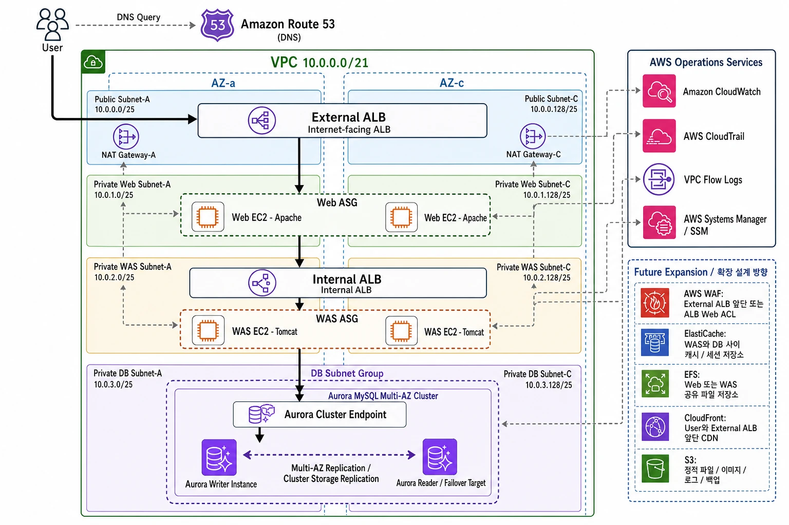

프로젝트 개요
배경과 해결하려던 문제
병원 내부에서 사용하던 서비스를 외부 사용자에게 제공하는 상황을 가정했습니다. 사용자 증가에 맞춰 처리 용량을 조절하고, 일부 서버의 장애가 전체 서비스 중단으로 이어지는 영향을 줄이는 것이 주요 과제였습니다.
이를 위해 요청을 중계하는 Web, 애플리케이션을 실행하는 WAS, 데이터를 저장하는 DB를 분리했습니다. 각 계층의 연결 경로와 접근 권한을 구성한 뒤, 부하 시험과 장애 시험으로 동작을 확인했습니다.
이 프로젝트는 Spring PetClinic을 활용한 교육 프로젝트이며, 실제 병원의 운영 데이터나 시스템을 이전한 사례는 아닙니다.
목표와 구현 범위
| 목표 | 구현·검증 범위 |
|---|---|
| 계층별 역할 분리 | Apache·Tomcat·Aurora를 연결한 3계층 구성 |
| 일부 서버 장애 대응 | 두 가용영역 분산, ALB 상태 확인, ASG 인스턴스 교체 |
| 부하 변화 대응 | Web·WAS 자동 확장·축소, Aurora Reader 자동 확장·축소 |
| 배포 전환과 복귀 | 내부 ALB를 이용한 Blue/Green 전환·롤백·드레이닝 |
| DB 연결과 복구 | 읽기·쓰기 연결 분리, JDBC Wrapper, 장애 조치 비교, PITR 복원 |
| 접근 제어와 운영 관찰 | SG·IAM·SSM·WAF, CloudWatch 지표·로그·알림 |
담당 역할과 협업
팀의 역할 분담
| 담당자 | 담당 영역 |
|---|---|
| 이용희 | 팀장·일정 및 산출물 조율·모니터링 |
| 김원섭 | VPC·서브넷·라우팅·NAT·ALB 등 인프라 |
| 송진하 | Apache·Tomcat·PetClinic 등 서비스 리소스 |
| 김연우 | SG·IAM·SSM·WAF 등 보안 |
| 김민석 | ASG·Reader 확장 및 후속 확장 기술 검토 |
개인 담당 범위
저는 서비스가 실행되는 Web/WAS 환경과 계층 사이의 연결을 담당했습니다.
- Apache에서 내부 ALB로 요청을 전달하는 프록시 구성
- Tomcat 설치와 PetClinic 배포
- 애플리케이션의 배포 파일·접속 경로 정리
- WAS와 Aurora 사이의 연결 구성
- 메모리 부족에 따른 WAS 사양과 JVM 힙 조정
서비스 구성은 인프라·보안·모니터링과 맞물려 있었습니다. Apache의 전달 주소와 내부 ALB 포트, 대상 그룹의 WAS 포트와 상태 확인 경로, DB 접속정보와 접근 권한을 함께 맞춰야 했습니다.
아래의 자동 확장, DB 장애 조치, 백업 복원, 보안 시험 결과는 팀 전체의 구현·검증 결과로 구분합니다.
전체 아키텍처와 요청 흐름


Web·WAS·DB 3계층 구성
주요 요청 흐름은 다음과 같습니다.
사용자 → 외부 ALB → Apache → 내부 ALB → Tomcat·PetClinic → Aurora
| 구성 요소 | 역할 |
|---|---|
| Route 53 | 서비스 도메인 조회 |
| 외부 ALB | HTTPS 요청 수신과 Web 대상 분산 |
| Apache | 내부 ALB로 요청 중계 |
| 내부 ALB | 정상 WAS 대상으로 요청 분산, 배포 시 대상 그룹 전환 |
| Tomcat·PetClinic | 애플리케이션 실행과 업무 요청 처리 |
| Aurora Writer·Reader | 쓰기·읽기 연결 처리 |
| CloudWatch | 지표·로그 수집과 알림 연결 |
사용자는 도메인을 조회한 뒤 외부 ALB에 HTTPS로 접속합니다. 외부 ALB는 Web으로 요청을 전달하고, Apache는 이를 내부 ALB로 중계합니다. 내부 ALB가 WAS를 선택하면 PetClinic이 요청을 처리하고 필요한 DB 연결을 사용합니다.
두 가용영역의 네트워크 배치
서울 리전의 ap-northeast-2a와 ap-northeast-2c를 사용했습니다. 각 가용영역에 Public·Web·WAS·DB 서브넷을 배치했습니다.
최종 VPC 주소 범위는 10.0.0.0/21입니다.
| 계층 | ap-northeast-2a | ap-northeast-2c |
|---|---|---|
| Public | 10.0.0.0/25 | 10.0.0.128/25 |
| Private Web | 10.0.1.0/25 | 10.0.1.128/25 |
| Private WAS | 10.0.2.0/25 | 10.0.2.128/25 |
| Private DB | 10.0.3.0/25 | 10.0.3.128/25 |
외부 ALB와 NAT는 Public 영역에, Web·WAS·DB는 Private 영역에 배치했습니다. 설계상 Private Web·WAS의 외부 통신은 같은 가용영역의 NAT를 사용하고, DB 서브넷에는 인터넷으로 나가는 기본 경로를 두지 않았습니다.
계층 사이의 통신
| 구간 | 프로토콜·포트 |
|---|---|
| 사용자 → 외부 ALB | HTTPS 443 |
| 외부 ALB → Web | HTTP 80 |
| Web → 내부 ALB | HTTP 8080 |
| 내부 ALB → WAS | HTTP 8080 |
| WAS → Aurora | DB 연결 3306, TLS 사용 |
Web·WAS의 내부 HTTP 구간과 외부 HTTPS·DB TLS 구간을 구분해 구성했습니다.
주요 설계 결정과 변경 이유
네트워크 주소 설계 변경
초기에는 VPC /16, 서브넷 /24로 설계했으며, 최종적으로 VPC /21, 서브넷 /25로 변경했습니다.
최종 구성은 두 가용영역에 네 계층을 배치하는 8개 서브넷으로 정리했습니다. 초기 설계와 최종 설정의 차이는 실제 변경 이력으로 기록했습니다.
RDS for MySQL에서 Aurora로 전환
초기 DB 설계는 RDS for MySQL이었으며, 이후 Aurora로 변경했습니다. 최종 구성에서는 Writer와 Reader를 구분하고, 애플리케이션의 읽기 전용 트랜잭션에 따라 연결 대상을 선택했습니다.
RDS for MySQL과 Aurora를 모두 직접 구축해 같은 PetClinic·WAS 환경과 요청 부하에서 장애 조치를 비교했습니다. 비교 결과는 DB 전환 이벤트와 애플리케이션의 서비스 복구 시간을 구분해 정리했습니다.
자동 확장 기준 변경
초기 요청 수 기준에서 CPU 사용률 기준으로 자동 확장 정책을 변경했습니다.
Web과 WAS의 ASG를 각각 구성하고, 두 그룹 모두 최소·희망·최대 인스턴스 수를 2/2/4, CPU 목표값을 40%로 설정했습니다. 부하가 증가하면 인스턴스가 늘어나고, 부하가 줄면 각각 기본 2대로 돌아오는 동작을 확인했습니다.
상태 확인도 EC2 상태 확인 중심에서 ELB 상태 확인을 함께 사용하는 구성으로 변경했습니다.
배포 방식 변경과 EFS 제외
초기에는 골든 AMI를 중심으로 배포했고, 여러 WAS가 같은 PetClinic 배포 파일을 공유하도록 EFS를 사용했습니다.
이후 기존 환경과 새 환경을 준비해 전환하는 Blue/Green 절차로 변경했습니다. 이번 배포 구성에서는 WAS 사이의 배포 파일 공유가 불필요해졌다고 판단해 EFS를 최종 구성에서 제외했습니다.
EFS는 초기 구축·시험에서 사용한 뒤 제외한 구성 요소입니다. 이 변경을 EFS가 404 오류의 확정 원인이었다는 의미로 연결하지는 않았습니다.
서비스 구축과 DB 연결
Apache와 내부 ALB 연결
초기 Apache는 WAS의 사설 IP로 직접 요청을 전달했습니다. 이후 전달 대상을 내부 ALB로 변경했습니다.
최종 내부 ALB의 수신 포트는 8080입니다. Apache 설정 기록에서 포트가 생략된 부분은 실제 구성과 구분해 정정했습니다.
이 구조에서 Apache는 내부 ALB를 연결 지점으로 사용하고, WAS의 증설·교체에 따른 대상 관리는 내부 ALB와 대상 그룹을 통해 처리하도록 구성했습니다.
Tomcat·PetClinic 배포
빌드 산출물인 petclinic.war를 서버에 배포할 때 ROOT.war로 이름을 변경했습니다. 최종 서비스는 / 경로로 접속하며, 등록 부하 시험은 POST /owners/new로 수행했습니다.
| 항목 | 프로젝트 기록 |
|---|---|
| Apache | 2.4.68 |
| Tomcat 서버 | 9.0.120 |
| Java | 8 |
| Spring Framework | 5.3.9 |
| Tomcat JDBC 라이브러리 | 9.0.53 |
| 빌드 산출물 | petclinic.war |
| 서버 배포 파일 | ROOT.war |
| 최종 접속 경로 | / |
Tomcat 서버 버전과 JDBC 라이브러리 버전은 서로 다른 구성 요소의 값입니다.
요청 처리 스레드와 DB 연결 풀도 구분했습니다. 발표자료의 요청 처리 스레드 값은 maxThreads=200이며, 확인한 WAS DB 연결 풀 값은 maxActive=100입니다.
Writer·Reader 연결 분리와 JDBC Wrapper
애플리케이션은 트랜잭션의 읽기 전용 상태를 기준으로 데이터소스를 선택하도록 구성했습니다.
| 트랜잭션 상태 | 연결 대상 |
|---|---|
| 읽기 전용 | Reader용 데이터소스 |
| 그 외 | Writer용 데이터소스 |
보존 소스에는 연결 획득을 필요한 시점까지 늦추는 LazyConnectionDataSourceProxy가 적용되어 있습니다. 연결 관리에는 AWS Advanced JDBC Wrapper를 사용했으며, RDS Proxy는 사용하지 않았습니다.
Aurora의 기준 배치는 Writer 2a, Reader 2c입니다. Reader 자동 확장 범위는 Writer를 제외하고 최소 1대·최대 4대로 설정했습니다. 자동 증가·감소는 확인했지만, 실제 기준 지표와 목표값은 남은 자료로 확정하지 못했습니다.
DB 계정과 접속정보 관리
초기 admin 계정에서 PetClinic 전용 DB 계정으로 변경했습니다. 전용 계정에는 PetClinic DB의 조회·등록·수정·삭제 권한을 부여했습니다.
DB 접속 URL은 Parameter Store, 계정 정보는 Secrets Manager에서 가져오는 구조로 관리했습니다. 배포 문서에는 Tomcat 시작 전 설정 파일을 생성하고, PetClinic이 /opt/petclinic/application.properties를 읽어 연결하는 절차가 기록되어 있습니다.
배포와 운영 절차
Blue/Green 환경 준비와 전환
배포 과정에서는 기존 Blue 환경을 기준으로 새 Green WAS 환경을 준비했습니다.
- 새 WAS를 기동합니다.
- DB 접속정보를 가져와 실행 환경에 반영합니다.
- 새 환경의 정상 상태를 확인합니다.
- 내부 ALB의 WAS 대상 그룹을 수동으로 전환합니다.
- 기존 Blue의 처리 중 요청을 정리하는 드레이닝을 거칩니다.
- 기존 Blue 서버를 종료합니다.
트래픽 전환 지점은 Web 뒤쪽의 내부 ALB입니다.
롤백과 드레이닝
새 환경으로 전환한 뒤 기존 환경으로 되돌리는 롤백 시험을 수행했고, 복귀 후 서비스 정상 동작을 확인했습니다.
기존 서버 종료 시에는 처리 중인 요청을 정리하는 드레이닝 절차를 거쳤습니다. 다만 정확한 전환·롤백 시간과 드레이닝 설정값은 보존된 기록으로 확인하지 못했습니다.
비밀번호 교체와 새 WAS 반영
DB 비밀번호 자동 교체를 설정하고, 변경 후 애플리케이션 연결을 검증했습니다.
검증 절차는 새 WAS 기동 → 최신 비밀번호 조회·반영 → 내부 ALB 전환 → PetClinic 정상 연결 확인이었습니다. 기존 실행 WAS가 재시작 없이 즉시 새 비밀번호를 반영했다고 기록하지 않았습니다.
백업 정책과 복원 절차
자동 백업 보관 기간은 7일로 설정했습니다. 복원은 원하는 날짜·시각을 지정하는 PITR, 특정 시점 복원 방식으로 시험했습니다.
복원한 DB에 PetClinic을 연결해 정상 동작을 확인하고, 복원 기준 시점의 데이터와 대조했습니다.
복구 목표는 RPO 24시간·RTO 1시간으로 정했습니다. RPO는 허용하는 데이터 손실 시간 범위, RTO는 서비스 복구 목표 시간입니다. 실제 복원 소요 시간은 미확인이므로 목표 달성 여부와 복원 수행 사실을 구분했습니다.
보안·모니터링·알림
SG 체이닝과 IAM 권한 분리
Security Group을 계층별로 나누고, 앞단 계층의 Security Group을 참조해 필요한 통신을 허용하는 SG 체이닝 방식을 사용했습니다.
IAM에는 태그 조건을 적용하고, 인프라·서비스·모니터링·보안·확장 설계의 다섯 담당 영역에 맞춰 권한을 분리했습니다. 허용된 작업의 수행뿐 아니라, 권한이 없는 다른 영역의 리소스에 접근했을 때 실제로 거부되는지도 시험했습니다.
개별 SG 아웃바운드 전체와 IAM 정책의 모든 조건·API 조합에 대한 시험 기록까지 확보한 것은 아닙니다.
SSM·HTTPS·TLS·WAF
서버 관리 접속은 초기 SSH에서 SSM으로 변경했습니다. 외부 ALB에는 ACM 인증서를 사용한 HTTPS를 구성했고, WAS와 Aurora 사이에는 TLS를 사용했습니다.
외부 ALB에 연결한 WAF에는 다음 규칙 구성이 기록되어 있습니다.
- Common Rule Set
- Known Bad Inputs Rule Set
- SQLi Rule Set
- 요청 빈도 기반 Rate-based Rule
차단 규칙을 적용한 뒤 계획한 시험을 시작하기 전에, 여러 외부 IP에서 들어온 다량 요청 중 일부가 차단되는 것을 관찰했습니다. 이를 통제된 공격 시험 결과나 DDoS로 단정하지 않았습니다.
CloudTrail은 처음부터 검토·설계하고 실제 사용했습니다. VPC Flow Logs의 실제 적용·수집 여부는 미확인으로 남겼습니다.
CloudWatch 지표·로그·Canary
CloudWatch에서 CPU, 메모리, CPU Credit, 응답 시간, Target 5XX, 정상 대상 수 등의 지표를 관찰했습니다.
Apache·Tomcat 로그를 수집하고, Logs Insights에서 여러 로그 스트림을 조회하는 구성을 사용했습니다. 실제 알람은 CPU와 Canary 중심으로 구성했습니다.
Canary는 외부 서비스 URL의 응답을 주기적으로 확인하는 용도로 사용했습니다. 정확한 최종 스크립트와 성공 판정 조건은 보존 자료로 확인하지 못했습니다.
Discord 장애·복구 알림
알림은 다음 경로로 전달했습니다.
CloudWatch Alarm → SNS → Lambda → Discord
발표자료에는 Discord로 전달된 경고와 정상 복구 메시지가 남아 있습니다. 이를 통해 운영자가 대시보드를 계속 확인하지 않아도 알람 상태 변화를 전달받을 수 있도록 구성했습니다.
시험 방법과 검증 결과
등록·조회 부하 시험
초기에는 JMeter를 사용했고, 최종 부하 시험은 k6로 진행했습니다. 등록과 조회는 서로 다른 시나리오로 시험했습니다.
| 항목 | 등록 시험 | 조회 시험 |
|---|---|---|
| 주요 동작 | 보호자 등록 | 보호자 검색·수의사 조회·메인 조회 |
| 요청 구성 | POST /owners/new | 보호자 검색 50%·수의사 25%·메인 25% |
| 최대 가상 사용자 | 50 VU | 50 VU |
| 부하 증가 | 5분 | 5분 |
| 유지 | 10분 | 10분 |
| 감소 | 5분 | 5분 |
최대 가상 사용자 수와 단계별 시간은 동일하게 두었으며, 요청 구성과 대기 조건은 구분했습니다. 50 VU는 수행한 시험의 부하 조건이며, 서비스의 최대 수용 인원으로 산정한 값은 아닙니다.
성능 수치는 여러 실행에서 모은 결과입니다.
| 지표 | 자료에서 확인한 내용 |
|---|---|
| CPU | 개별 WAS 그래프에서 약 43.2% 관측 |
| p50 | 원본 그래프의 최대 표시값 0.2 |
| p95 | 그래프상 대체로 약 0.2초 이하 |
| p99 | 일부 시점에 약 2.8초까지 상승 |
| Target 5XX | 발표자료에 0으로 기록 |
p50은 원본 이미지의 단위 표시가 충분하지 않아 표시값과 단위 환산을 구분했습니다. 각 그래프를 같은 실행에서 동시에 측정한 결과로 합치지 않았으며, Target 5XX 값도 전체 HTTP 오류율로 확대하지 않았습니다.
자동 확장·축소 검증
Web과 WAS 모두 CPU 부하가 증가할 때 인스턴스가 자동으로 늘어나는 것을 확인했습니다. 부하가 감소한 뒤에는 각각 기본 2대로 자동 축소되는 것도 확인했습니다.
Aurora Reader 역시 자동 증가와 자동 감소를 시험했습니다. 최소 1대·최대 4대는 정책 설정 범위이며, 시험에서 실제로 4대까지 증가했다는 뜻은 아닙니다.
인스턴스·가용영역 장애 대응 시험
Web·WAS 인스턴스를 각각 종료하고, ASG가 대체 인스턴스를 생성해 서비스에 투입하는 과정을 확인했습니다.
또한 같은 가용영역의 Web·WAS를 동시에 중단한 상태에서 다른 가용영역을 통해 서비스가 유지되는지 확인했습니다. 이 시험은 Web·WAS 중단을 통한 가용영역 장애 가정이며, 해당 영역의 NAT·DB나 AWS 가용영역 전체를 중단한 시험은 아닙니다.
RDS·Aurora 장애 조치 비교
RDS for MySQL과 Aurora를 직접 구축하고, PetClinic·WAS 환경과 요청 부하를 동일하게 맞춰 비교했습니다.
| DB | 서비스 복구 시간 |
|---|---|
| Aurora | 17초 |
| RDS for MySQL | 약 35초 |
여러 번 시험했으며, 위 값은 각 DB에서 서비스 복구에 가장 오래 걸린 최대 관측값입니다. 평균값이나 모든 장애에서 보장되는 복구시간은 아닙니다.
Aurora 자료의 12.467초는 DB 이벤트 시작·완료 시각 차이를 AI가 계산한 참고값입니다. PetClinic이 다시 서비스 가능한 상태까지 확인한 17초와는 측정 범위가 다릅니다.
배포 전환·롤백·백업 복원 검증
| 시험 | 확인한 결과 |
|---|---|
| Blue/Green 전환 | 전환 중 연속 요청을 보냈고 해당 시험에서 실패 요청이 관찰되지 않음 |
| 롤백 | 기존 환경으로 복귀한 뒤 정상 서비스 확인 |
| 드레이닝 | 처리 중 요청 정리 후 기존 Blue 종료 |
| 비밀번호 교체 | 새 WAS에 최신 접속정보 반영 후 정상 연결 |
| PITR 복원 | 복원 DB의 데이터 대조와 PetClinic 정상 동작 확인 |
검증 결과는 시험한 조건과 관측 범위에 한정했습니다. 전체 운영 기간의 무오류나 모든 상황의 무중단을 보장하는 결과로 표현하지 않았습니다.
문제 해결 사례
메모리 부족으로 인한 Tomcat 종료
초기 t3.micro 환경에서 메모리 부족으로 Tomcat이 종료되는 문제가 발생했습니다. 이에 WAS의 인스턴스 사양과 JVM 힙을 함께 조정했습니다.
| 항목 | 변경 전 | 변경 후 |
|---|---|---|
| 인스턴스 | t3.micro | t3.small |
| JVM 최대 힙 | 512m | 768m |
| 최종 힙 설정 | — | -Xms256m, -Xmx768m |
이 조정값을 최종 WAS 실행 환경에 반영했습니다.
당시 발표자료는 OOM Killer에 의한 종료로 설명하지만, 현재 커널 로그가 남아 있지 않아 종료 메커니즘을 독립적으로 재확인하지는 못했습니다. 특정 코드나 조회 요청을 직접 원인으로 확정하지 않았습니다.
ASG 복원 후 404 발생과 임시 복구
비용 관리를 위해 야간에 ASG 목표 인스턴스 수를 0으로 낮췄다가 아침에 다시 늘리는 과정에서, Tomcat은 실행됐지만 도메인 접속 시 404가 발생하는 문제를 겪었습니다.
당시 기록에는 문제 EC2를 완전히 종료하고, ASG가 새 인스턴스를 생성한 뒤 정상화됐다고 남아 있습니다. 단순 재부팅과는 구분되는 복구 방식입니다.
멘토링에서는 파일 경로, 마운트 상태, 서비스 기동 순서 등을 원인 후보로 검토했습니다. 다만 남은 자료에서 근본 원인과 영구 해결 조치를 확인하지 못해, 이 사례는 발생 조건과 임시 복구가 확인된 장애 기록으로 남겼습니다.
확인한 범위와 남은 과제
| 사례 | 확인한 내용 | 남은 확인 과제 |
|---|---|---|
| Tomcat 종료 | 메모리 부족 경험, 사양·힙 조정 | 커널 로그, 상세 재현·재시험 기록 |
| ASG 복원 후 404 | 실제 발생, 인스턴스 재생성 후 정상화 기록 | 직접 원인, 영구 해결, 재발 방지 완료 여부 |
증상, 원인 후보, 적용한 조치, 정상화 확인을 구분해 기록했습니다.
성과·한계·향후 개선
구현·검증한 결과
프로젝트에서는 네트워크와 애플리케이션, DB, 접근 제어, 모니터링을 연결하고 다음 동작을 확인했습니다.
- 두 가용영역에 Web·WAS를 분산한 서비스 구성
- 부하 변화에 따른 서버와 Reader의 자동 증가·감소
- 서버 종료 이후 ASG의 대체 인스턴스 생성
- 같은 가용영역의 Web·WAS 중단 시 다른 영역의 서비스 유지
- 내부 ALB를 이용한 배포 전환과 롤백
- DB 장애 조치 이후 서비스 복구
- 특정 시점 복원과 데이터 대조
- 권한 밖 리소스 접근 거부와 WAF 차단 관찰
- 지표·로그 확인 및 경고·복구 알림 전달
개인적으로는 서비스 리소스 영역을 맡아 Apache, 내부 ALB, Tomcat, PetClinic, Aurora 사이의 연결을 다뤘고, 실행 환경의 메모리 부족에 대응했습니다.
측정과 기록의 한계
현재는 AWS 계정이 삭제되어 자원 설정과 로그를 다시 조회할 수 없습니다. 기록은 최종 발표자료, 보존 문서·소스·화면과 수행 당시의 확인 내용을 바탕으로 정리했습니다.
주요 한계는 다음과 같습니다.
- k6 원시 결과와 실행별 서버·DB 사양 대응이 충분히 남아 있지 않습니다.
- 장애 조치의 반복 횟수와 전체 회차 기록이 확보되지 않았습니다.
- 정확한 배포 전환·롤백·백업 복원 시간은 미확인입니다.
- 404의 근본 원인과 영구 해결 조치는 확인되지 않았습니다.
- 프로젝트 비용을 낮추기 위해 DB 사양을 하향했지만, 절감액은 별도로 계산하지 않았습니다.
후속 개선 과제
운영 근거를 남기는 방식을 우선 보완할 필요가 있습니다.
- 시험 스크립트, 실행 조건, 원시 결과, 배포 버전을 함께 보관합니다.
- 장애 발생·감지·알림·교체·서비스 복구 시각을 구분해 기록합니다.
- IAM·SG·ASG·DB 설정을 내보내 최종 적용값을 보존합니다.
- WAS 증가에 따른 DB 연결 수요와 연결 허용량을 함께 검증합니다.
- 배포·비밀번호 교체·DB 장애 조치 중 요청과 데이터에 미치는 영향을 기록합니다.
당시 확장안으로는 CloudFront, ElastiCache, RDS Proxy를 검토했습니다. 이 항목들은 최종 적용 성과와 구분합니다.
발표자료와 증빙
프로젝트의 구성과 결과는 최종 발표자료, 서비스·배포·DB 관리 문서, 부하 시험 그래프, 로그·알림 화면, 시연 영상으로 정리했습니다.
| 자료 | 확인할 수 있는 내용 |
|---|---|
| 최종 발표자료 7~9쪽 | 전체 아키텍처, 서브넷, ALB 구성 |
| 최종 발표자료 11~13쪽 | Web·WAS 실행 환경, 배포 흐름, DB 구성 |
| 최종 발표자료 15~20쪽 | HTTPS·WAF·SG·SSM·접속정보·IAM 권한 |
| 최종 발표자료 22~27쪽 | 모니터링, 부하 시험, 응답시간 그래프, 로그, Discord 알림 |
| 서비스·배포·DB 관리 문서 | 실행 환경, 접속정보 생성, 연결 관리, 백업·복원 절차 |
| 시연 영상 | 보호자 검색·등록 후 재조회, 수의사 목록, XML·JSON 조회 |
최종 발표자료는 「[최종] 3팀 이용희 외 4인」 32쪽 자료를 기준으로 했습니다. 자료의 이전 설정이나 잘못된 표기는 실제 변경 이력과 구분해 본문에 반영했습니다.